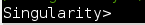

Using Containers
General Information
This guide provides instructions on how to use containers in BPLIM’s infrastructure. Follow these steps to request a container for your project:
Determine your requirements: Before requesting a container, identify your specific needs for statistical tools, packages, and any other necessary software.
Contact BPLIM’s team: After identifying your container requirements, reach out to BPLIM’s team by sending an email to
bplim@bportugal.ptwith the details from Step 1.Await a response: After submitting your request, you will receive a response from BPLIM’s team. The team will review your requirements and provide you with a container that meets your specifications.
Configure the container: Once the container is ready, BPLIM’s team will configure it for you and provide you with the necessary details to access and utilize the container.
Review the container: Upon receiving the container, carefully review it to ensure that it meets your requirements. Contact BPLIM if you have any questions or concerns that need clarification.
Access to the container
Alternative A: use a pre-defined setup
Once you have logged in to the server, you will see an icon that opens the container for your project. To launch the container and start the predefined application that you specified in your request, simply double-click on the icon. Once you have completed this step, it will function similarly to any other application.
Alternative B: use the command line
This solution makes use of the Terminal, giving you more freedom to interact with the container. Follow the steps below:
Open a Terminal in your project’s work_area
(e.g.,
/bplimext/projects/PROJECT_ID/work_area).The container is located in your project’s tools folder
(
/bplimext/projects/PROJECT_ID/tools/_container).Run the container using the following command:
singularity shell ../tools/iPROJECT_ID.BPLIM_Python_R_Jupyter.sif- Inside the container, the prompt will change to
Singularity >

- For example, to open a Jupyter Notebook, type:
jupyter notebookIf you want to use Stata or RStudio, type xstata-mp or rstudio, respectively.
- When you’re finished using the container, type exit to leave the Singularity image.
Build and replicate the container of your project
In this section, we will discuss how to replicate your project’s container locally. To do this, you’ll need a running instance of Singularity and the script used to build the container for your project (which can be requested from BPLIM). If you have these, just open a Terminal on your computer and type:
singularity build --fake-root iPROJECT_ID.BPLIM_Python_R_Jupyter.sif
PROJECT_ID.BPLIM_Python_R_Jupyter.defYou also have the option to write your own script for your project’s container, which we can then build and make available in your tools folder.
The steps to build a Singularity container discussed below are designed for Linux, but with minor adjustments, they can also be applied in other environments.
Note that although it is possible to build Singularity containers on Windows, it requires a Linux virtual machine or a Windows Subsystem for Linux (WSL) environment. Once you have set up a Linux environment, you can use the Singularity command-line tools to build your container.1
In addition to this guide, please refer to BPLIM’s Guide for Researchers (@BPLIMguide) for more information.2
Starting point: the container
A Singularity container is a way to package and distribute software and its dependencies in a portable and isolated environment. To build a Singularity container, you’ll need to have Singularity installed on your system.
Here are the basic steps to build a container:
Create a recipe/definition file: This is a text file that contains the instructions for building the container. The recipe file should specify the base image to use, any additional software to install, and any environment variables to set.
Build the container: Use the singularity
buildcommand to build the container from the recipe file. For example:
singularity build mycontainer.sif recipe.def- Test the container: Use the singularity shell command to enter the container and test that it runs correctly. For example:
singularity shell mycontainer.sif
- (optional) Publish your container to a public or private registry, like Singularity Hub or Singularity Container Library.
In the Appendix of this manual, you will find an example of a definition file for building a container with Stata. For detailed instructions and troubleshooting, you can refer to the official documentation at https://sylabs.io/guides/3.6/user-guide/index.html. Additionally, here is a simple recipe file that creates a container based on the Ubuntu 20.04 base image and installs the nano text editor:
Bootstrap: library
From: ubuntu:20.04
%post
apt-get update
apt-get install -y nanoThe definition file step by step
In a Singularity definition file, you can write a variety of commands and instructions. Some common things you might include in the file are:
Package installation: You can use package managers like
aptoryumto install software and dependencies that your container needs to run. For example, you might install a specific version of Python or a library that your application depends on.Environment setup: You can use commands like
ENVor export to set environment variables that your container needs to run. For example, you might set thePATHvariable to include the location of a specific binary or library.File copy: You can use commands like
COPYorADDto copy files from the host system into the container. For example, you might copy a script or a configuration file that your application needs to run.Runscript: As previously stated, the
Runscriptis a script that is executed when the container is run. It typically contains commands to set up the environment and launch the application or process that the container is designed to run.Labels: You can include information about the container, such as the container’s name, version, and author.
Help: You can include a brief description of the container, which is useful for users who are trying to understand what the container does.
It’s worth noting that depending on the complexity of your container and the requirements of your application, you may need to include additional commands and instructions in your definition file.
header
In a Singularity definition file, the “header” refers to the first section of the file that contains metadata and instructions for building the container. The header typically includes information such as the container’s name, version, and author, as well as instructions for obtaining and installing the software that the container is designed to run. The header also can include instructions for configuring the build environment, such as setting environment variables or installing dependencies. The header is usually written in a specific format (e.g. #!Singularity) and starts at the first line of the file.
#!Singularity
Bootstrap: library
From: ubuntu:20.04
%help
This container runs Stata.
%labels
AUTHOR BPLIM
VERSION v1.0This header uses the Bootstrap: library to indicate that the container should be built using the Singularity Library, and uses the From: ubuntu:20.04 to indicate that the container is based on the Ubuntu 20.04 image. This header also includes a %help section that provides a brief description of the container, and a %labels section that includes information about the container’s author and version.
It’s worth noting that the way headers are written is not fixed and different instructions could be included.
runscript
The “runscript” in a Singularity definition file is a script that is executed when the container is run. It typically contains commands to set up the environment and launch the application or process that the container is designed to run. The runscript is executed by the Singularity runtime after the container is started, and it can be used to configure the container’s environment, set up the application, and launch the application or process.
An example:
%runscript
Rscript myscript.RIn case you want the container to execute a Stata .do file you can write something along the following lines:
%runscript
if [ $# -ne 1 ]; then
echo "Please provide the main script"
exit 1
fi
stata-mp -e do "$1"
if tail -1 "$log" | egrep "^r\([0-9]+\);"
then
exit 1
else
exit 0
fiTo launch Stata in graphical mode, your run script should look something like this:
%runscript
xstata-mpIf your container is named container_name.sif, you can launch Stata inside the container using the Terminal by typing the following command:
./container_name.sifIf you want to execute a particular file, you should type the following command in the Terminal:
./container_name.sif MyDoFile.dofiles
The %files section in a Singularity definition file is used to specify files or directories that should be included in the container image when it is built. Here is an example of what you might include in the %files section:
%files
/path/to/myfile1.txt
/path/to/mydir1
/path/to/myfile2.sh
/path/to/mydir2This would include the files myfile1.txt and myfile2.sh and the directories mydir1 and mydir2 in the container image, with the same paths.
You can also use wildcard to copy multiple files or directories, for example :
%files
/path/to/mydir/*This would include all files and directories in the folder mydir in the container image.
It’s worth noting that the %files section is optional, you don’t need to include it in your definition file if you don’t need to add any additional files to your container. Also, the %files section is only useful when creating a new container, if you want to add files to an existing container you can use the singularity copy command.
environment
The %environment section in a Singularity definition file is used to specify environment variables that should be set when the container is run. Here is an example of what you might include in the %environment section to build a container running R version 4.1.1:
%environment
export R_VERSION=4.1.1
export R_HOME=/usr/lib/R/$R_VERSION
export PATH=$PATH:$R_HOME/binThis will set the environment variable R_VERSION to 4.1.1, the environment variable R_HOME to /usr/lib/R/4.1.1 and the environment variable PATH to include the R’s binary path \$R_HOME/bin
You can use these environment variables in your %post or %runscript sections to install R 4.1.1 and run commands with the R version 4.1.1.
This will set the environment variable R_VERSION to 4.1.1, the environment variable R_HOME to /usr/lib/R/4.1.1 and the environment variable PATH to include the R’s binary path \$R_HOME/bin
%post
apt-get update && apt-get install -y r-base=$R_VERSIONIt’s worth noting that you can also use ENV instruction in place of export and you can use %environment section to set any environment variable you want, not only R.
post
The %post section in a Singularity definition file is used to specify commands that should be run during the container build process, after the base image has been imported. Here is an example of what you might include in the %post section to build a container running R version 4.1.1 and the most recent version of RStudio Server:
%post
# update package lists and install R 4.1.1
apt-get update && apt-get install -y r-base=$R_VERSION
# add RStudio repository and key
echo "deb https://cran.rstudio.com/bin/linux/ubuntu
bionic-cran35/" | tee -a /etc/apt/sources.list
apt-key adv --keyserver keyserver.ubuntu.com --recv-keys
E298A3A825C0D65DFD57CBB651716619E084DAB9
# install RStudio Server
apt-get update && apt-get install -y rstudio-serverThis will update the package lists, install R version 4.1.1 using the environment variable set before and add the RStudio repository and key to the container, then install RStudio Server on the container.
It’s worth noting that this example assumes that the container is based on Ubuntu 20.04 (codenamed ‘focal’), if you are using a different version or distribution you should adjust the package manager commands and repository URLs accordingly.
Also, the %post section is optional and you don’t need to include it in your definition file if you don’t need to run any additional command during the container building process.
If you also want to include Jupyter Notebook, the R kernel and R nbextensions in your container, you can add the following commands to the %post section of your Singularity definition file:
%post
# update package lists and install R 4.1.1
apt-get update && apt-get install -y r-base=$R_VERSION
# add RStudio repository and key
echo "deb https://cran.rstudio.com/bin/linux/ubuntu
bionic-cran35/" | tee -a /etc/apt/sources.list
apt-key adv --keyserver keyserver.ubuntu.com --recv-keys
E298A3A825C0D65DFD57CBB651716619E084DAB9
# install RStudio Server
apt-get update && apt-get install -y rstudio-server
# install Jupyter
apt-get install -y jupyter-core
# install R kernel for Jupyter
R -e "install.packages(c('repr', 'IRdisplay', 'evaluate',
'crayon', 'pbdZMQ', 'devtools', 'uuid', 'digest'),
repos='https://cloud.r-project.org/')"
R -e "devtools::install_github('IRkernel/IRkernel')"
R -e "IRkernel::installspec(user = FALSE)"
# install R nbextensions
R -e "install.packages('devtools', repos =
'https://cloud.r-project.org/')"
R -e "devtools::install_github('randy3k/r-notebook')"
This will install Jupyter, the R kernel for Jupyter, and the R nbextensions for Jupyter Notebook.
It’s worth noting that these commands are installing R packages from CRAN and GitHub repositories, so you may want to check that these repositories are available on your system and that you have internet connection during the container build process.
Note: you can install packages from binaries.
Including additional packages
To include TinyTeX and machine learning packages in your container, you can add the following commands to the %post section of your Singularity definition file:
%post
# update package lists and install R 4.1.1
apt-get update && apt-get install -y r-base=$R_VERSION
# add RStudio repository and key
echo "deb https://cran.rstudio.com/bin/linux/ubuntu
bionic-cran35/" | tee -a /etc/apt/sources.list
apt-key adv --keyserver keyserver.ubuntu.com --recv-keys
E298A3A825C0D65DFD57CBB651716619E084DAB9
# install RStudio Server
apt-get update && apt-get install -y rstudio-server
# install Jupyter
apt-get install -y jupyter-core
# install R kernel for Jupyter
R -e "install.packages(c('repr', 'IRdisplay', 'evaluate',
'crayon', 'pbdZMQ', 'devtools', 'uuid', 'digest'),
repos='https://cloud.r-project.org/')"
R -e "devtools::install_github('IRkernel/IRkernel')"
R -e "IRkernel::installspec(user = FALSE)"
# install R nbextensions
R -e "install.packages('devtools', repos =
'https://cloud.r-project.org/')"
R -e "devtools::install_github('randy3k/r-notebook')"
# install TinyTeX
wget -qO- "https://github.com/yihui/tinytex/raw/main/tools/inst
all-unx.sh" | sh
# install additional R packages
R -e "install.packages(c('caret','randomForest','e1071','gbm','
xgboost', 'lightgbm','catboost','mlr','tidymodels','h2o','caret
Ensemble','pROC','ROCR',
'pROC.plot','ROCR.plot','kernlab','pls','neuralnet','nnet'),
repos='https://cloud.r-project.org/')"
This will install TinyTeX, which is a lightweight, cross-platform, and easy-to-maintain LaTeX distribution and also some popular machine learning packages such as caret, randomForest, e1071, gbm, xgboost, lightgbm, catboost, mlr, tidymodels, h2o, caretEnsemble, pROC, ROCR, pROC.plot, ROCR.plot, kernlab, pls, neuralnet, and nnet.
Cleaning temporary files
To clean up temporary files during the build process of your container, you can add the following command to the %post section of your Singularity definition file:
%post
# ... other commands ...
# clean up temporary files
apt-get clean && rm -rf /var/lib/apt/lists/* /tmp/* /var/tmp/*This command will remove all temporary files created during the installation of packages, including package lists and downloaded package files. By doing this, it will help to keep your container’s size as small as possible, and can also help to avoid potential issues with the container.
You can also include this set of commands at the end of your %runscript, so that when the container runs it will clean temporary files after the completion of the container’s job.
%runscript
# commands to run your container
...
apt-get clean && rm -rf /var/lib/apt/lists/* /tmp/* /var/tmp/*This will keep your container clean and ready for the next run.
In the example provided in the Appendix we also added:
apt-get update
apt-get autoremove
apt-get autocleanBuilding the container
time singularity build --fakeroot iPROJECT_ID_BPLIM.sif PROJECT_ID_BPLIM.defWe usually name the image with the prefix i followed by the name of the definition file. For example, iBPLIM-Stata_V1.sif, where the definition file is named BPLIM-Stata_V1.def.
Building the container online
There are several cloud-based solutions that allow you to build Singularity containers online. Here are a few options:
Singularity Hub: This is a cloud-based service that allows you to build and host Singularity containers. You can connect your GitHub or GitLab repository to Singularity Hub, and it will automatically build your container when changes are pushed to the repository.
Azure Container Instances: You can use Azure Container Instances (ACI) to build and run Singularity containers in the cloud. This service allows you to create and manage containers without the need to manage the underlying infrastructure.
Google Cloud Build: You can use Google Cloud Build to build your Singularity containers in the cloud. Cloud Build can be triggered by pushes to a connected GitHub or Bitbucket repository.
AWS Batch: AWS Batch is a service that allows you to run batch computing workloads on the AWS cloud. You can use AWS Batch to build your Singularity containers in the cloud.
GitLab’s Container Registry: GitLab’s Container Registry is a built-in feature of GitLab that allows you to build and store your container images directly in your GitLab repository.
Each of these services has its own unique set of features and pricing plans. You should evaluate each one based on your specific needs and requirements.
Appendix
An example of a Singularity definition file
Bootstrap: docker
From: ubuntu:20.04
IncludeCmd: yes
%runscript
if [ $# -ne 1 ]; then
echo "Please provide the main script"
exit 1
fi
stata-mp -e do "$1"
if tail -1 "$log" | egrep "^r\([0-9]+\);"
then
exit 1
else
exit 0
fi
%files
/mnt/cephfs/home/exu0o9@bdp.pt/containers/
_SOURCES/libpng12-0_1.2.54-1ubuntu1.11ppa0eoan_amd64.deb
/mnt/cephfs/home/exu0o9@bdp.pt/containers/
_SOURCES/stata17.tar.gz
/mnt/cephfs/home/exu0o9@bdp.pt/containers/
_SOURCES/stata_container_just_Stata.do
%environment
R_VERSION=4.1.0
export R_VERSION
R_CONFIG_DIR=/etc/R/
export R_CONFIG_DIR
export LC_ALL=C
export PATH=$PATH
TZ=Europe/Lisbon
export PATH="/opt/stata17:$PATH"
%labels
Author :: Gustavo Iglesias and Miguel Portela -
BPLIM
Version :: (just) Stata -- V1.0.1
Build_date :: January 12, 2023
%post
apt update && apt-get update &&
DEBIAN_FRONTEND="noninteractive" TZ="Europe/London" apt-get
-y install apt-transport-https apt-utils
software-properties-common dirmngr curl wget xkb-data x11-apps
bzip2 qt5-default mesa-utils libgl1-mesa-dev libgl1-mesa-glx
libegl1-mesa libxrandr2 libxss1 libxcursor1 libxcomposite1
libasound2 libxi6 libxtst6 iproute2 swig build-essential
libnss3 net-tools unixodbc-dev git vim krb5-user libncurses5
libxml2-dev libsasl2-dev libldap2-dev libssl-dev libnlopt-dev
gnupg gnupg2 unixodbc gfortran nano cmake libblas3 libblas-dev
liblapack-dev liblapack3 aptitude xorg-dev libreadline-dev
libpcre3-dev liblzma-dev libbz2-dev libcurl4-openssl-dev
libmagick++-dev libhdf5-dev hdf5-helpers gsl-bin libgsl-dev
libgsl23 libgslcblas0 libgdal-dev libproj-dev libnss3
libzmq3-dev libgtk2.0-0
# Stata
tar -xvzf/mnt/cephfs/home/exu0o9@bdp.pt/containers/_SOURCES
/stata17.tar.gz --no-same-owner
mv stata17 /opt/
dpkg -i/mnt/cephfs/home/exu0o9@bdp.pt/containers/_SOURCES
/libpng12-0_1.2.54-1ubuntu1.11ppa0eoan_amd64.deb
export PATH="/opt/stata17:$PATH"
# install ado files
mkdir /opt/stata17/ado/plus
stata-mp -b do
/mnt/cephfs/home/exu0o9@bdp.pt/containers/_SOURCES/
stata_container_just_Stata.do
chmod -R ugo=rx /opt/stata17/
# CLEAN temporary files
apt-get update
apt-get autoremove
apt-get autocleanFootnotes
For more information, please visit BPLIM’s GitHub resources.↩︎